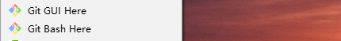

如何快速简单的建立一个博客！
最近几天我学习了如何搭建一个博客，下面将经验分享一下！
一.所需工具
①node.js
②git
③hexo
以及Sublime Text 3
二.应用工具的安装
建议去官网下载所需要的工具，如果官网数据下载比较慢，可以考虑镜像和第三方网站（注意安全！）
下面是官网链接
node.js
git
Sublime Text 3
建议安装正式版程序！
安装完成后可以通过win+r，输入cmd回车，输入node -v和npm -v来查看版本号！
安装Git和配置好Git环境，安装成功的象征就是在电脑上任何位置鼠标右键能够出现如下两个选择

注意：一般出于安全考虑，只有在Git Bash Here中才能进行Git的相关操作。如果需要在cmd命令行里调用Git，那么就要配置电脑的环境变量Path，或者在安装的时候选择use Git from the Windows Command Prompt。这个可有可无，影响不大，成功配置的界面如图
接下来是hexo的安装和配置
建议在自己认为比较合适的地方安装，以及博客目录需要和hexo在同一目录（就是说要在博客文件夹使用hexo的话hexo必须安装在博客文件夹或者/.这样子），我建议在D盘新建一个文件夹用来做博客的库比较好！
然后cd进入文件夹安装hexo
输入npm install hexo -g，开始安装Hexo
输入hexo -v，检查hexo的版本号！
输入hexo init，初始化博客文件夹，为了容易辨认，可以输入hexo init ＋博客名，自动创建用户名的文件夹！
ok!这样子准备工作完成第一步了！
输入npm install，安装所需要的组件
输入hexo g
输入hexo s，开启本地服务器,打开浏览器，输入网址,欣赏本地网页吧！
如果无法成功hexo s，那么可能端口被占用了。此时我们ctrl+c停止服务器，接着输入“hexo server -p 端口号”来改变端口！
刚开始生成的服务器：
hexo的安装以及配置完成！
三.github的注册和新库的建立！
1.注册：
在GitHub官网 注册账号，很简单的！
Create account
注册过程可能需要验证你的邮箱，其他就不在赘述。
2.创建仓库：
然后需要创建一个仓库(repository) 来存储我们的网站，点击首页任意位置出现的 New repository按钮创建仓库, Respository name 中的username.github.io 的username 一定与前面的Owner 一致，记住你的username下面会用到。需要勾选Initialize this repository with a README！
Create reponsitory
这样就完成了，得到了空间！
这样你就获得了一个hithub网址 你的库名：username.github.io,现在就可以进行访问了！
进入库，大佬可以开始你的表演了，能力强直接写源代码也不是不可以！红红火火恍恍惚惚！
Sublime Text 3配置hexo博客文件！
打开Sublime Text 3直接将博客目录拉到软件窗口内！在其文件夹中，找到_config.yml文件，修改repo值！
！
repo值是你在github项目里的ssh(图片右边)
以及将url（第十六行）后面改为url: https://xiaohanxh.github.io！
文件里面题目（title）和作者都可以更改！
{kind=link}
四.hexo上传
1.ssh配置
在git或者命令指示符中输入ssh-keygen -t rsa -C “xxxxx@xx.com”，连续三个回车，生成密钥，最后得到了两个文件：id_rsa和id_rsa.pub（默认存储路径是：C:\Users\Administrator.ssh）。
我们不需要密码（才不是记不住呢！！！！）
打开.ssh目录下的id_rsa，复制其中内容，登录Github，点击头像下的settings，添加ssh。
[](18.png）
新建一个new ssh key，将id_rsa.pub文件里的内容复制上去
确认，完成！
{kind=link}
2.hexo d
在git或者命令指示符中输入hexo d，会弹出对话框输入账号密码，开始上传！
在生成以及部署文章之前，需要安装一个扩展：npm install hexo-deployer-git –save
完成后打开你的网页(http://用户名.github.io)试试吧！没错！成功了！
{kind=link}
然后是博客的配置
主题安装
为了使博客不太难看，我们需要安装一个主题，切换至刚刚生成的Hexo 目录，安装主题
$ cd username.github.io
$ git clone https://github.com/iissnan/hexo-theme-next themes/next
这里选了一个极简的主题，也是Hexo众多主题中最受欢迎的一个。Hexo theme也有更多主题供你选择。
主题配置：
主题配置文件在username.github.io/themes/next/_config.yml中修改。